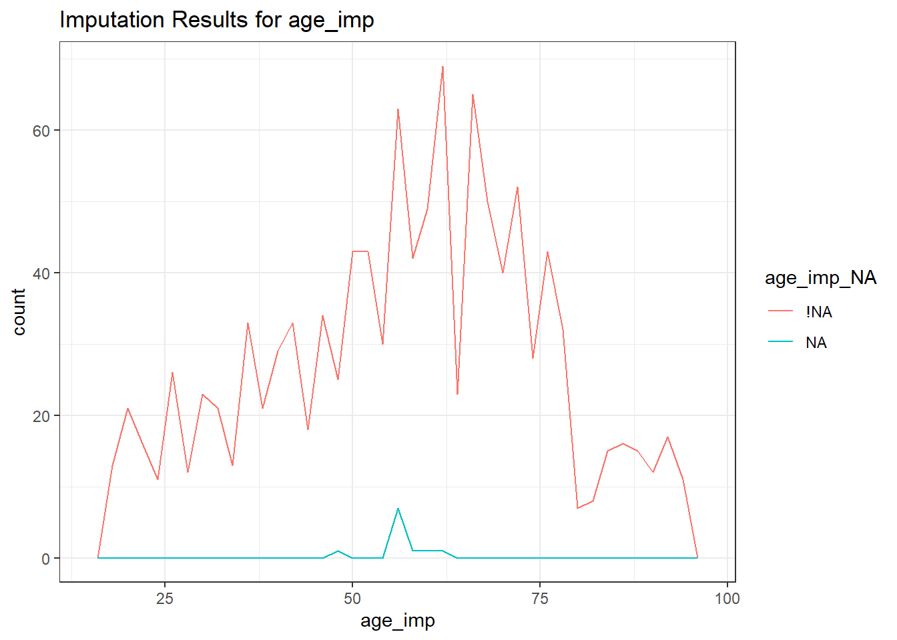

knitr::opts_chunk$set(comment = NA)
library(janitor)
library(ggridges)
library(knitr)
library(naniar)
library(simputation)
library(Hmisc)
library(mosaic)
library(patchwork)
library(visdat)
library(tidyverse)
theme_set(theme_bw())7 Dealing with Missingness: Single Imputation
7.1 R Setup Used Here
7.1.1 Data Load
smart_cle <- readRDS("data/smart_cle.Rds")7.2 Selecting Some Variables from the smart_cle data
smart_cle1 <- smart_cle |>
select(SEQNO, physhealth, genhealth, bmi,
age_imp, female, race_eth, internet30,
smoke100, activity, drinks_wk, veg_day)The smart_cle.Rds data file available on the Data and Code page of our website describes information on 99 variables for 1133 respondents to the BRFSS 2017, who live in the Cleveland-Elyria, OH, Metropolitan Statistical Area. The variables in the smart_cle1.csv file are listed below, along with the items that generate these responses.
| Variable | Description |
|---|---|
SEQNO |
respondent identification number (all begin with 2016) |
physhealth |
Now thinking about your physical health, which includes physical illness and injury, for how many days during the past 30 days was your physical health not good? |
genhealth |
Would you say that in general, your health is … (five categories: Excellent, Very Good, Good, Fair or Poor) |
bmi |
Body mass index, in kg/m2 |
age_imp |
Age, imputed, in years |
female |
Sex, 1 = female, 0 = male |
race_eth |
Race and Ethnicity, in five categories |
internet30 |
Have you used the internet in the past 30 days? (1 = yes, 0 = no) |
smoke100 |
Have you smoked at least 100 cigarettes in your life? (1 = yes, 0 = no) |
activity |
Physical activity (Highly Active, Active, Insufficiently Active, Inactive) |
drinks_wk |
On average, how many drinks of alcohol do you consume in a week? |
veg_day |
How many servings of vegetables do you consume per day, on average? |
str(smart_cle1)tibble [1,133 × 12] (S3: tbl_df/tbl/data.frame)
$ SEQNO : num [1:1133] 2.02e+09 2.02e+09 2.02e+09 2.02e+09 2.02e+09 ...
$ physhealth: num [1:1133] 4 0 0 0 0 2 2 0 0 0 ...
$ genhealth : Factor w/ 5 levels "1_Excellent",..: 1 1 3 3 3 2 3 2 4 1 ...
$ bmi : num [1:1133] NA 23.1 26.9 26.5 24.2 ...
$ age_imp : num [1:1133] 51 28 37 36 88 43 23 34 58 54 ...
$ female : num [1:1133] 1 1 1 1 0 0 0 0 0 1 ...
$ race_eth : Factor w/ 5 levels "White non-Hispanic",..: 1 1 3 1 1 1 1 3 2 1 ...
$ internet30: num [1:1133] 1 1 0 1 1 1 1 1 1 1 ...
$ smoke100 : num [1:1133] 1 0 0 1 1 1 0 0 0 1 ...
$ activity : Factor w/ 4 levels "Highly_Active",..: 4 4 3 1 1 NA 1 1 1 1 ...
$ drinks_wk : num [1:1133] 0.7 0 0 4.67 0.93 0 2 0 0 0.47 ...
$ veg_day : num [1:1133] NA 3 4.06 2.07 1.31 NA 1.57 0.83 0.49 1.72 ...7.3 smart_cle1: Seeing our Missing Data
The naniar package provides several useful functions for summarizing missingness in our data set. Like all tidy data sets, our smart_cle1 tibble contains rows which describe observations, sometimes called cases, and also contains columns which describe variables.
Overall, there are 1133 cases, and 1133 observations in our smart_cle1 tibble.
- We can obtain a count of the number of missing cells in the entire tibble.
smart_cle1 |> n_miss()[1] 479- We can use the
miss_var_summaryfunction to get a sorted table of each variable by number missing.
miss_var_summary(smart_cle1) |> kable()| variable | n_miss | pct_miss |
|---|---|---|
| activity | 109 | 9.6204766 |
| veg_day | 101 | 8.9143866 |
| bmi | 91 | 8.0317741 |
| drinks_wk | 66 | 5.8252427 |
| smoke100 | 40 | 3.5304501 |
| race_eth | 26 | 2.2947926 |
| physhealth | 24 | 2.1182701 |
| age_imp | 11 | 0.9708738 |
| internet30 | 7 | 0.6178288 |
| genhealth | 4 | 0.3530450 |
| SEQNO | 0 | 0.0000000 |
| female | 0 | 0.0000000 |
- Or we can use the
miss_var_tablefunction to tabulate the number of variables that have each observed level of missingness.
miss_var_table(smart_cle1) # A tibble: 11 × 3
n_miss_in_var n_vars pct_vars
<int> <int> <dbl>
1 0 2 16.7
2 4 1 8.33
3 7 1 8.33
4 11 1 8.33
5 24 1 8.33
6 26 1 8.33
7 40 1 8.33
8 66 1 8.33
9 91 1 8.33
10 101 1 8.33
11 109 1 8.33- Or we can get a count for a specific variable, like
activity:
smart_cle1 |> select(activity) |> n_miss()[1] 109- We can also use
prop_miss_caseorpct_miss_caseto specify the proportion (or percentage) of missing observations across an entire data set, or within a specific variable.
prop_miss_case(smart_cle1)[1] 0.2127096smart_cle1 |> select(activity) |> pct_miss_case()[1] 9.620477- We can also use
prop_miss_varorpct_miss_varto specify the proportion (or percentage) of variables with missing observations across an entire data set.
prop_miss_var(smart_cle1)[1] 0.8333333pct_miss_var(smart_cle1)[1] 83.33333- We use
miss_case_tableto identify the number of missing values for each of the cases (rows) in our tibble.
miss_case_table(smart_cle1)# A tibble: 7 × 3
n_miss_in_case n_cases pct_cases
<int> <int> <dbl>
1 0 892 78.7
2 1 129 11.4
3 2 51 4.50
4 3 22 1.94
5 4 21 1.85
6 5 10 0.883
7 6 8 0.706- Use
miss_case_summaryto specify individual observations and count their missing values.
miss_case_summary(smart_cle1)# A tibble: 1,133 × 3
case n_miss pct_miss
<int> <int> <dbl>
1 17 6 50
2 42 6 50
3 254 6 50
4 425 6 50
5 521 6 50
6 729 6 50
7 757 6 50
8 1051 6 50
9 89 5 41.7
10 94 5 41.7
# … with 1,123 more rowsThe case numbers identified here are row numbers. Extract the data for case 17, for instance, with the slice function.
smart_cle1 |> slice(17)# A tibble: 1 × 12
SEQNO physh…¹ genhe…² bmi age_imp female race_…³ inter…⁴ smoke…⁵ activ…⁶
<dbl> <dbl> <fct> <dbl> <dbl> <dbl> <fct> <dbl> <dbl> <fct>
1 2.02e9 0 1_Exce… NA 50 0 White … NA NA <NA>
# … with 2 more variables: drinks_wk <dbl>, veg_day <dbl>, and abbreviated
# variable names ¹physhealth, ²genhealth, ³race_eth, ⁴internet30, ⁵smoke100,
# ⁶activity7.3.1 Plotting Missingness
The gg_miss_var function plots the number of missing observations in each variable in our data set.
gg_miss_var(smart_cle1)So the most commonly missing variable is activity.
To get a general sense of the missingness in our data, we might use either the vis_dat or the vis_miss function from the visdat package.
vis_miss(smart_cle1)vis_dat(smart_cle1)7.4 Missing-data mechanisms
My source for this description of mechanisms is Chapter 25 of Gelman and Hill (2007), and that chapter is available at this link.
- MCAR = Missingness completely at random. A variable is missing completely at random if the probability of missingness is the same for all units, for example, if for each subject, we decide whether to collect the
diabetesstatus by rolling a die and refusing to answer if a “6” shows up. If data are missing completely at random, then throwing out cases with missing data does not bias your inferences. - Missingness that depends only on observed predictors. A more general assumption, called missing at random or MAR, is that the probability a variable is missing depends only on available information. Here, we would have to be willing to assume that the probability of nonresponse to
diabetesdepends only on the other, fully recorded variables in the data. It is often reasonable to model this process as a logistic regression, where the outcome variable equals 1 for observed cases and 0 for missing. When an outcome variable is missing at random, it is acceptable to exclude the missing cases (that is, to treat them as NA), as long as the regression controls for all the variables that affect the probability of missingness. - Missingness that depends on unobserved predictors. Missingness is no longer “at random” if it depends on information that has not been recorded and this information also predicts the missing values. If a particular treatment causes discomfort, a patient is more likely to drop out of the study. This missingness is not at random (unless “discomfort” is measured and observed for all patients). If missingness is not at random, it must be explicitly modeled, or else you must accept some bias in your inferences.
- Missingness that depends on the missing value itself. Finally, a particularly difficult situation arises when the probability of missingness depends on the (potentially missing) variable itself. For example, suppose that people with higher earnings are less likely to reveal them.
Essentially, situations 3 and 4 are referred to collectively as non-random missingness, and cause more trouble for us than 1 and 2.
7.5 Options for Dealing with Missingness
There are several available methods for dealing with missing data that are MCAR or MAR, but they basically boil down to:
- Complete Case (or Available Case) analyses
- Single Imputation
- Multiple Imputation
7.6 Complete Case (and Available Case) analyses
In Complete Case analyses, rows containing NA values are omitted from the data before analyses commence. This is the default approach for many statistical software packages, and may introduce unpredictable bias and fail to include some useful, often hard-won information.
- A complete case analysis can be appropriate when the number of missing observations is not large, and the missing pattern is either MCAR (missing completely at random) or MAR (missing at random.)
- Two problems arise with complete-case analysis:
- If the units with missing values differ systematically from the completely observed cases, this could bias the complete-case analysis.
- If many variables are included in a model, there may be very few complete cases, so that most of the data would be discarded for the sake of a straightforward analysis.
- A related approach is available-case analysis where different aspects of a problem are studied with different subsets of the data, perhaps identified on the basis of what is missing in them.
7.7 Single Imputation
In single imputation analyses, NA values are estimated/replaced one time with one particular data value for the purpose of obtaining more complete samples, at the expense of creating some potential bias in the eventual conclusions or obtaining slightly less accurate estimates than would be available if there were no missing values in the data.
- A single imputation can be just a replacement with the mean or median (for a quantity) or the mode (for a categorical variable.) However, such an approach, though easy to understand, underestimates variance and ignores the relationship of missing values to other variables.
- Single imputation can also be done using a variety of models to try to capture information about the NA values that are available in other variables within the data set.
- The
simputationpackage can help us execute single imputations using a wide variety of techniques, within the pipe approach used by thetidyverse. Another approach I have used in the past is themicepackage, which can also perform single imputations.
7.8 Multiple Imputation
Multiple imputation, where NA values are repeatedly estimated/replaced with multiple data values, for the purpose of obtaining mode complete samples and capturing details of the variation inherent in the fact that the data have missingness, so as to obtain more accurate estimates than are possible with single imputation.
- We’ll postpone the discussion of multiple imputation for a while.
7.9 Approach 1: Building a Complete Case Analysis: smart_cle1_cc
In the 431 course, we usually dealt with missing data by restricting our analyses to respondents with complete data on all variables. Let’s start by doing that here. We’ll create a new tibble called smart_cle1_cc which includes all respondents with complete data on all of these variables.
smart_cle1_cc <- smart_cle1 |>
drop_na()
dim(smart_cle1_cc)[1] 892 12Our smart_cle1_cc tibble now has many fewer observations than its predecessors, but all of the variables in this complete cases tibble have no missing observations.
| Data Set | Rows | Columns | Missingness? |
|---|---|---|---|
smart_cle |
1133 | 99 | Quite a bit. |
smart_cle1 |
1133 | 12 | Quite a bit. |
smart_cle1_cc |
892 | 12 | None. |
7.10 Approach 2: Single Imputation to create smart_cle1_sh
Next, we’ll create a data set which has all of the rows in the original smart_cle1 tibble, but deals with missingness by imputing (estimating / filling in) new values for each of the missing values. To do this, we’ll make heavy use of the simputation package in R.
The simputation package is designed for single imputation work. Note that we’ll eventually adopt a multiple imputation strategy in some of our modeling work, and we’ll use some specialized tools to facilitate that later.
To begin, we’ll create a “shadow” in our tibble to track what we’ll need to impute.
smart_cle1_sh <- bind_shadow(smart_cle1)
names(smart_cle1_sh) [1] "SEQNO" "physhealth" "genhealth" "bmi"
[5] "age_imp" "female" "race_eth" "internet30"
[9] "smoke100" "activity" "drinks_wk" "veg_day"
[13] "SEQNO_NA" "physhealth_NA" "genhealth_NA" "bmi_NA"
[17] "age_imp_NA" "female_NA" "race_eth_NA" "internet30_NA"
[21] "smoke100_NA" "activity_NA" "drinks_wk_NA" "veg_day_NA" Note that the bind_shadow() function doubles the number of variables in our tibble, specifically by creating a new variable for each that takes the value !NA or NA. For example, consider
smart_cle1_sh |> count(activity, activity_NA)# A tibble: 5 × 3
activity activity_NA n
<fct> <fct> <int>
1 Highly_Active !NA 338
2 Active !NA 173
3 Insufficiently_Active !NA 201
4 Inactive !NA 312
5 <NA> NA 109The activity_NA variable takes the value !NA (meaning not missing) when the value of the activity variable is known, and takes the value NA for observations where the activity variable is missing. This background tracking will be helpful to us when we try to assess the impact of imputation on some of our summaries.
7.10.1 What Type of Missingness Do We Have?
There are three types of missingness that we might assume in any given setting: missing completely at random (MCAR), missing at random (MAR) and missing not at random (MNAR). Together, MCAR and MAR are sometimes called ignorable non-response, which essentially means that imputation provides a way to useful estimates. MNAR or missing NOT at random is sometimes called non-ignorable missingness, implying that even high-quality imputation may not be sufficient to provide useful information to us.
Missing Completely at Random means that the missing data points are a random subset of the data. Essentially, there is nothing that makes some data more likely to be missing than others. If the data truly match the standard for MCAR, then a complete-case analysis will be about as good as an analysis after single or multiple imputation.
Missing at Random means that there is a systematic relationship between the observed data and the missingness mechanism. Another way to say this is that the missing value is not related to the reason why it is missing, but is related to the other variables collected in the study. The implication is that the missingness can be accounted for by studying the variables with complete information. Imputation strategies can be very helpful here, incorporating what we know (or think we know) about the relationships between the results that are missing and the results that we see.
- Wikipedia provides a nice example. If men are less likely to fill in a depression survey, but this has nothing to do with their level of depression after accounting for the fact that they are male, then the missingess can be assumed MAR.
- Determining whether missingness is MAR or MNAR can be tricky. We’ll spend more time discussing this later.
Missing NOT at Random means that the missing value is related to the reason why it is missing.
Continuing the Wikipedia example, if men failed to fill in a depression survey because of their level of depression, then this would be MNAR.
Single imputation is most helpful in the MAR situation, although it is also appropriate when we assume MCAR.
Multiple imputation will, similarly, be more helpful in MCAR and MAR situations than when data are missing NOT at random.
It’s worth noting that many people are unwilling to impute values for outcomes or key predictors in a modeling setting, but are happy to impute for less important covariates. For now, we’ll assume MCAR or MAR for all of the missingness in our smart_cle1 data, which will allow us to adopt a single imputation strategy.
7.10.2 Single imputation into smart_cle1_sh
Which variables in smart_cle1_sh contain missing data?
miss_var_summary(smart_cle1_sh)# A tibble: 24 × 3
variable n_miss pct_miss
<chr> <int> <dbl>
1 activity 109 9.62
2 veg_day 101 8.91
3 bmi 91 8.03
4 drinks_wk 66 5.83
5 smoke100 40 3.53
6 race_eth 26 2.29
7 physhealth 24 2.12
8 age_imp 11 0.971
9 internet30 7 0.618
10 genhealth 4 0.353
# … with 14 more rowsWe will impute these variables using several different strategies, all supported nicely by the simputation package.
These include imputation methods based solely on the distribution of the complete cases of the variable being imputed.
impute_median: impute the median value of all non-missing observations into the missing values for the variableimpute_rhd: random “hot deck” imputation involves drawing at random from the complete cases for that variable
Also available are imputation strategies that impute predicted values from models using other variables in the data set besides the one being imputed.
impute_pmm: imputation using predictive mean matchingimpute_rlm: imputation using robust linear modelsimpute_cart: imputation using classification and regression treesimpute_knn: imputation using k-nearest neighbors methods
7.10.3 Imputing Binary Categorical Variables
Here, we’ll arbitrarily impute our 1/0 variables as follows:
- For
internet30we’ll use theimpute_rhdapproach to draw a random observation from the existing set of 1s and 0s in the completeinternet30data. - For
smoke100we’ll use a method called predictive mean matching (impute_pmm) which takes the result from a model based on the (imputed)internet30value and whether or not the subject isfemale, and converts it to the nearest value in the observedsmoke100data. This is a good approach for imputing discrete variables.
These are completely arbitrary choices, for demonstration purposes.
set.seed(2020001)
smart_cle1_sh <- smart_cle1_sh |> data.frame() |>
impute_rhd(internet30 ~ 1) |>
impute_pmm(smoke100 ~ internet30 + female) |>
as_tibble()
smart_cle1_sh |> count(smoke100, smoke100_NA)# A tibble: 4 × 3
smoke100 smoke100_NA n
<dbl> <fct> <int>
1 0 !NA 579
2 0 NA 21
3 1 !NA 514
4 1 NA 19smart_cle1_sh |> count(internet30, internet30_NA)# A tibble: 4 × 3
internet30 internet30_NA n
<dbl> <fct> <int>
1 0 !NA 207
2 0 NA 1
3 1 !NA 919
4 1 NA 6Other approaches that may be used with 1/0 variables include impute_knn and impute_pmm.
7.10.4 Imputing Quantitative Variables
We’ll demonstrate a different approach for imputing each of the quantitative variables with missing observations. Again, we’re making purely arbitrary decisions here about what to include in each imputation. In practical work, we’d want to be a bit more thoughtful about this.
Note that I’m choosing to use impute_pmm with the physhealth and age_imp variables. This is (in part) because I want my imputations to be integers, as the other observations are for those variables. impute_rhd would also accomplish this.
set.seed(2020001)
smart_cle1_sh <- smart_cle1_sh |> data.frame() |>
impute_rhd(veg_day ~ 1) |>
impute_median(drinks_wk ~ 1) |>
impute_pmm(physhealth ~ drinks_wk + female + smoke100) |>
impute_pmm(age_imp ~ drinks_wk + physhealth) |>
impute_rlm(bmi ~ physhealth + smoke100) |>
as_tibble()7.10.5 Imputation Results
Let’s plot a few of these results, so we can see what imputation has done to the distribution of these quantities.
veg_day
ggplot(smart_cle1_sh, aes(x = veg_day_NA, y = veg_day)) +
geom_count() +
labs(title = "Imputation Results for veg_day")favstats(veg_day ~ veg_day_NA, data = smart_cle1_sh) veg_day_NA min Q1 median Q3 max mean sd n missing
1 !NA 0.00 1.2675 1.72 2.42 7.49 1.912548 1.038403 1032 0
2 NA 0.26 1.3400 1.86 2.72 5.97 2.085050 1.062316 101 0drinks_wkfor which we imputed the median value…
ggplot(smart_cle1_sh, aes(x = drinks_wk_NA, y = drinks_wk)) +
geom_count() +
labs(title = "Imputation Results for drinks_wk")smart_cle1_sh |> filter(drinks_wk_NA == "NA") |>
tabyl(drinks_wk) drinks_wk n percent
0.23 66 1physhealth, a count between 0 and 30…
ggplot(smart_cle1_sh,
aes(x = physhealth, y = physhealth_NA)) +
geom_density_ridges() +
labs(title = "Imputation Results for physhealth")Picking joint bandwidth of 0.426smart_cle1_sh |> filter(physhealth_NA == "NA") |>
tabyl(physhealth) physhealth n percent
3 1 0.04166667
4 2 0.08333333
5 13 0.54166667
6 8 0.33333333age_imp, in (integer) years
ggplot(smart_cle1_sh,
aes(x = age_imp, color = age_imp_NA)) +
geom_freqpoly(binwidth = 2) +
labs(title = "Imputation Results for age_imp")
smart_cle1_sh |> filter(age_imp_NA == "NA") |>
tabyl(age_imp) age_imp n percent
48 1 0.09090909
57 7 0.63636364
58 1 0.09090909
61 1 0.09090909
63 1 0.09090909bmior body mass index
ggplot(smart_cle1_sh, aes(x = bmi, fill = bmi_NA)) +
geom_histogram(bins = 30) +
labs(title = "Histogram of BMI and imputed BMI")favstats(bmi ~ bmi_NA, data = smart_cle1_sh) bmi_NA min Q1 median Q3 max mean sd n
1 !NA 13.3000 24.1100 27.30000 31.68000 70.56000 28.40947 6.6289286 1042
2 NA 27.0693 27.0693 27.50229 27.66574 30.75898 27.66057 0.8964101 91
missing
1 0
2 07.10.6 Imputing Multi-Categorical Variables
The three multi-categorical variables we have left to impute are activity, race_eth and genhealth, and each is presented as a factor in R, rather than as a character variable.
We’ll arbitrarily decide to impute
activityandgenhealthwith a classification tree usingphyshealth,bmiandsmoke100,- and then impute
race_ethwith a random draw from the distribution of complete cases.
set.seed(2020001)
smart_cle1_sh <- smart_cle1_sh |>
data.frame() |>
impute_cart(activity + genhealth ~ physhealth + bmi + smoke100) |>
impute_rhd(race_eth ~ 1) |>
as_tibble()Let’s check our results.
smart_cle1_sh |> count(activity_NA, activity)# A tibble: 6 × 3
activity_NA activity n
<fct> <fct> <int>
1 !NA Highly_Active 338
2 !NA Active 173
3 !NA Insufficiently_Active 201
4 !NA Inactive 312
5 NA Highly_Active 90
6 NA Inactive 19smart_cle1_sh |> count(race_eth_NA, race_eth)# A tibble: 9 × 3
race_eth_NA race_eth n
<fct> <fct> <int>
1 !NA White non-Hispanic 805
2 !NA Black non-Hispanic 222
3 !NA Other race non-Hispanic 24
4 !NA Multiracial non-Hispanic 22
5 !NA Hispanic 34
6 NA White non-Hispanic 19
7 NA Black non-Hispanic 4
8 NA Multiracial non-Hispanic 2
9 NA Hispanic 1smart_cle1_sh |> count(genhealth_NA, genhealth)# A tibble: 7 × 3
genhealth_NA genhealth n
<fct> <fct> <int>
1 !NA 1_Excellent 164
2 !NA 2_VeryGood 383
3 !NA 3_Good 364
4 !NA 4_Fair 158
5 !NA 5_Poor 60
6 NA 2_VeryGood 3
7 NA 3_Good 1And now, we should have no missing values in the data, at all.
miss_case_table(smart_cle1_sh)# A tibble: 1 × 3
n_miss_in_case n_cases pct_cases
<int> <int> <dbl>
1 0 1133 1007.10.7 Saving the new tibbles
saveRDS(smart_cle1_cc, ("data/smart_cle1_cc.Rds"))
saveRDS(smart_cle1_sh, ("data/smart_cle1_sh.Rds"))